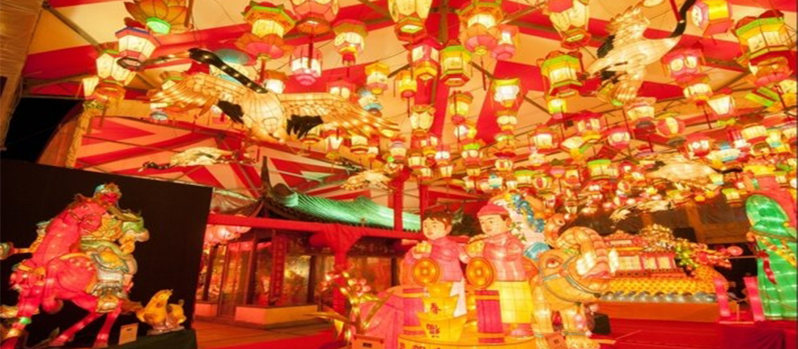

The Japanese love to hold festivals and there are some festivals
that would be very entertaining for all ages. One example is the
Nagasaki Lantern Festival started out as a way to celebrate the new
years, but in 1994 it turned into what is now the Lantern Festival.
Over 15,000 lanterns will paint the town during the 15 day festival.
There are many types of dances performed during the celebration. One
example of these dances is the Chinese Lion Dance. This event is the
second most viewed tradition in Japan. Lanterns are set afloat on the
water to signify us, “going back to our elements.” Visitors are welcomed
to this festival, and it's easy for them to participate as well. They are
able to participate by making their own lantern, or they can buy one from
the numerous shops around. These festivities make the festival fun and interactive
allowing anyone to enjoy the Lantern Festival.

One of the strangest cultural traditions celebrated in Japan would be KFC on Christmas Eve.
In 1974, KFC launched a Christmas ad campaign called, “kentucky for christmas.” These ads
allowed KFC to start to be viewed in a more elegant, authentic way in Japan. KFC would deliver
the chicken to houses in a Santa costume making the franchise rise extremely high in popularity
during this time of year. Although it can be difficult to partake in this event, during this
time of year, there is a KFC Christmas Special. This special allows patrons to place an order
weeks in advance, or face standing in line for hours. Lots of people view this event as more of
something along the lines of valentines day. An occasion of bringing a bucket of chicken to share
with loved ones. So if you ever happen to be in Japan consider getting a bucket of chicken for
someone special in your life.